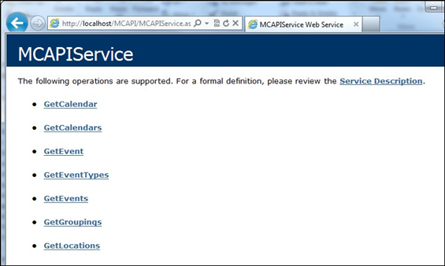

Once you meet the prerequisites, download the installation files, run the Master Calendar Installer, Install/upgrade the Database Component, Install/upgrade the Web Service, and Configure Master Calendar to use the Web Service, you will verify the Master Calendar API as shown below.
Open a browser and enter the following URL:
http://[ServerName]/MCAPI/MCAPIService.asmx(replace [ServerName] with the name of your web server)
Your browser should return a list of API calls.
